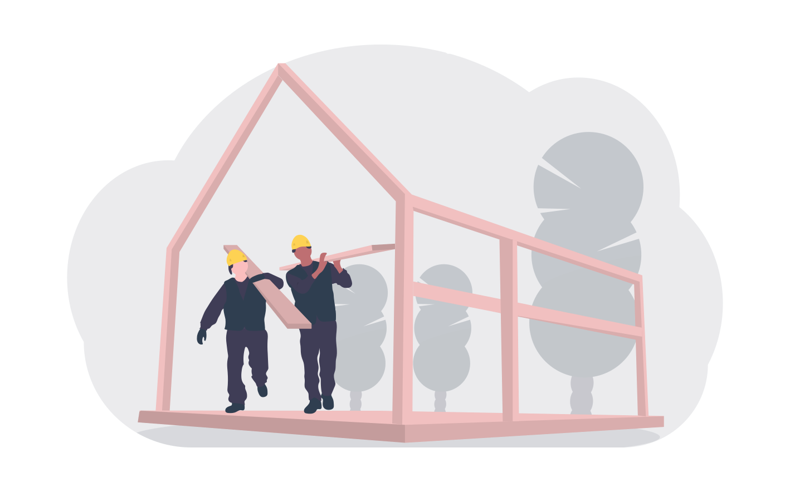

Why institutional decision-making needs improving
And how behavioural science can help.
Improving powerful institutions’ decision-making is one of the most important things we can do in the 21st century. Global challenges like climate change and AI safety require a huge degree of co-ordination from national and international institutions, and in particular they may need institutions to make decisions which are unpopular in the short term, but necessary in the long term. Governments need to reduce emissions and reduce their reliance on fossil fuels, but making such costly decisions in the face of global health and economic crises is not going to be palatable to politicians who wish to be re-elected in the near future. AI research labs must ensure that our understanding of AI ethics and safety are sufficient to prevent an AI from developing beyond our control, but this is both less exciting and less profitable.
Meanwhile, our information systems have become heavily dependent on social media platforms corporations which explicitly do not have responsibility for content posted on their platforms. That is not to say they should bear this responsibility, because that would likely lead to overly-conservative censorship of content to avoid litigation. But when misinformation is proliferating on platforms, the founder of Facebook is pleading for Congress to step in, and legislators are demonstrating a profound lack of expertise in the technologies at hand, we need to improve the decisions being made in one or both of these institutions.
Institutional decision-making is vague so it is important to clarify what is meant by institutions and decision-making. I borrow definitions from the Effective Institutions Project because they do an excellent job balancing comprehensiveness with brevity.
The definition of an institution is not completely standardized across disciplines or academic fields, but in this context we mean a formally organized group of people, usually delineated by some sort of legal entity (or an interconnected set of such entities) in the jurisdiction(s) in which that group operates.
…when we speak of “decision-making,” we are using that term broadly to refer to all of the aspects of the process leading up to an institution’s actions over which that institution has agency.
So put together, it means we want to understand the processes of a (usually) legal entity for achieving its aims. In the case of governments, these aims are usually to provide a safe, economically viable state for its citizens and residents, while corporations are usually required to deliver as much value to shareholders as possible.
Considering what an institution actually intends to do is related to the first of two pathways defined by the Effective Institutions Project for improving institutional decision-making. It is particularly important that powerful institutions, whose decisions can have broad second- and third-order consequences, are driven to improve global outcomes and factor in the scope of their impact beyond the likely more narrow set of interests that determine their actions. Once an institution at least has aims which are consistent with improving global outcomes, the next step is to understand the effectiveness of their process for achieving their aims.
This is where behavioural science comes in. The last five decades of behavioural science research has been ground-breaking to say the least. Researchers have identified how errors occur in our decision-making, how different contexts affect our thinking, and what this actually means for criminal justice outcomes, hiring decisions, and many more. For most institutions, the processes in place to achieve their intended outcomes necessarily involve human judgement, intuition, and group decision-making, which likely introduces a variety of errors in judgement.
In the face of challenges as complex and structurally interdependent as climate change and AI safety, we need institutions driven by holistic, altruistically-defined aims, and which are designed to effectively achieve those aims. Using research from behavioural science to inoculate and support decision-making from biases and judgement errors could enhance our problem-solving capacity for issues from pandemic response preparedness to political gridlock.
More to come soon.
